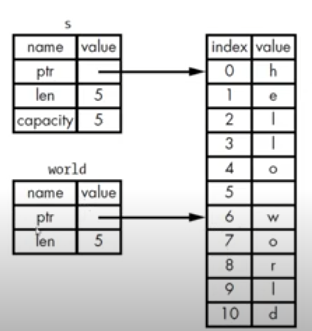

rust教程-04
rust 教程 04: 所有权
什么是所有权？
rust 的核心特性就是所有权
所有程序在运行时都必须管理它们使用计算机内存的方式
- 垃圾收集机制，即程序运行时，会不断地寻找不再使用的内存
- 程序员必须显示地分配和释放内存
rust 则采用所有权系统来管理内存，包含一组编译器在编译时检查的规则，因为是编译时检查，所以所有权特性不会影响运行时速度
stack VS heap
rust 这样的系统级编程语言，受到 stack 和 heap 的影响非常大
stack 和 heap 都是代码运行时可用的内存，但是结构不同
存储数据
stack 执行 LIFO 原则，即先进后出
所有存储在 stack 上的数据必须拥有已知的固定的大小
而编译时大小未知的数据或运行时大小可能发生变化的数据必须存放在 heap 上
heap 的内存组织性较差
- 当把数据放入 heap 时，会请求一定数量的空间
- 操作系统在 heap 里找到一块足够大的空间，并标记为在用，返回一个指针，即该空间的地址
- 该过程称作在 heap 上进行分配
把值压在 stack 上不叫分配，但是可以把指针存放在 stack 上
把数据压到 stack 上要比在 heap 上分配快得多，因为操作系统不需要寻找用来存储新数据的空间，只要往 stack 的顶端压入数据即可
在 heap 上分配空间需要做更多的工作，需要找到足够大的空间，并且要做好记录
访问数据
访问 heap 上的数据要比访问 stack 上的数据慢，因为需要通过指针才能找到 heap 中的数据。
对于现代处理器而言，由于缓存的缘故，如果指令在内存中跳转的次数越少，那么速度就越快
如果数据存放的距离比较近，则处理器处理速度更快（stack），反之更慢
在 heap 上分配大量空间也会消耗事件
函数调用
当代码调用函数时，值被传入到函数（也包括指向 heap 的指针），函数本地的变量被压到 stack 上，函数结束时，这些值也会从 stack 上弹出
所有权存在的原因
所有权要解决的问题：
- 跟踪代码的哪些部分正在使用 heap 的哪些数据
- 最小化 heap 上的重复数据量
- 清理 heap 上未使用的数据以避免空间不足
管理 heap 数据是所有权存在的原因
所有权规则
每个值都有一个变量，这个变量是该值的所有者
每个值同时只能有一个所有者
当所有者超出作用域（scope）时，该值将被删除
以 String 类型解释所有权规则
String 类型的字符串内容是可变的，而字符串字面值是不可变的。因为 String 是在 heap 上分配内存，而字符串字面值是在 stack 上压入字符串
1 | fn main() { |
当用完 String 之后，需要使用某种方式将内存返还给操作系统
- 在拥有 GC 的语言中，GC 会跟踪并清理不再使用的内存
- 没有 GC，就需要识别何时不再使用内存；
-
- 如果忘了，就浪费内存
-
- 如果提前做了，变量就会非法
-
- 如果做了两次，也是 bug，一次分配对应一次释放，要求每次分配对应一次释放
当超出作用域时，系统会执行 drop() 函数，将变量 s 所指向的内存释放
变量和数据交互的方式：移动(Move)
在下面的这种情况下，x 和 y 所代表的两个 6 都被压入 stack 中
1 | let x = 6; |
而在下面的这种情况中，针对 String 类型的变量，执行 s2 = s 之后，s 便将字符串的所有权交给了 s2，而 s 不再拥有值
1 | let mut s = String::from("hello world!"); |
一个 String 由 3 部分组成：一个指向存放字符串内容的内存指针，一个长度，一个容量。这些内容存放在 stack 上，而字符串则存放在 heap 上
当执行 s2 = s，在 stack 会赋值一份 String 的数据（指针、长度、容量)，但是并不会赋值指针所指向的 heap 上的数据，也就是两个指针指向同一个 heap 内存中的位置
当变量离开作用域时，rust 会自动调用 drop() 函数，将变量使用的 heap 自动释放，当 s 和 s2 都离开作用域时，rust 会释放两者的内存，也就是释放相同的内存，从而造成“二次释放 bug”
为了保证内存安全：
- rust 没有复制被分配的内存
- 在执行
s = s2之后，rust 是让 s 失效，所以当 s 离开作用域时，rust 不会释放任何东西
rust 不会自动创建数据的深拷贝
如果想要深度拷贝 heap 上面的 String 数据，而不仅仅是拷贝 stack 上的数据，可以使用 clone 方法，这种方法比较消耗资源
1 | let mut s = String::from("hello world!"); |
在 stack 上的数据复制叫 copy，比如整数类型的移动，就是在 stack 上进行复制。如果一个类型实现了 copy 这个特性（trait），那么旧的变量在赋值后仍然可用；但是，如果一个类型或者该类型的一部分实现了 drop 这个特性（trait），那么 rust 不允许让它再去实现 copy 了
一些拥有 copy trait 的类型：
- 任何简单标量的组合类型都可以是 copy 的，如：u32, bool, char, f64, tuple(标量1,标量2…)
- 任何需要分配内存或者资源的都不是 copy 得到
所有权与函数
1 | fn main() { |
一个变量的所有权总是遵循同样的模式：
- 把一个值赋给其他变量时就会发生移动
- 当一个包含 heap 数据的变量离开作用域时，它的值就会被 drop 函数清理掉，除非数据的所有权移动到另一个变量上了
引用与借用
引用本质上是一个指针，指向这个变量在 stack 中的位置
1 | fn main() { |
可变引用、不可变引用
不可以修改借用的东西，默认也是不可变的
如果需要可变，需要加上 mut
1 | fn main() { |
可变引用有一个重要的限制：在特定作用域内，对某一块数据，只能有一个可变的引用。好处是在编译时可以防止数据竞争
1 | let s1 = &mut s; |
数据竞争的几种行为：
- 两个或多个指针同时访问同一个数据；
- 至少有一个指针用于写入数据；
- 没有使用任何机制来同步对数据的访问；
可以通过创建新的作用域，来允许非同时的创建多个可变引用
1 | { |
另外一个限制：不可以同时拥有一个可变引用和一个不可变引用。因为可变应用修改了引用内容之后，不可变引用就失效了。但是多个不可变引用是可以同时存在的
悬空引用
Dangling References
即一个指针引用了内存中的某个地址，而这块内存可能已经释放并分配给其他人使用了
在 rust 里，编译器可以检查代码从而保证引用永远都不是悬空引用
引用的规则
在任何给定的时刻，只能满足下列条件之一：
- 一个可变的引用
- 人以数量不可变的引用
引用必须一直有效
切片（slice）
rust 中的另外一种不持有所有权的数据类型
指向字符串中一部分内容的引用
1 | fn main() { |

字符串切片的类型 &str，函数返回值就用这个
字符串字面值的就是个切片
1 | let s:&str = "hello world"; |
将字符串切片作为参数传递，从而兼容字符串字面值和 String 类型的参数
1 | fn first_world(s: &String) ->&str {} |
定义函数时使用字符串切片来代替字符串引用会使我们的 API 更加通用，且不会损失任何功能
1 | fn main() { |
其他类型的切片
1 | let a = [1,2,3,4,5]; |
参考
- https://www.youtube.com/watch?v=e3-2uxHhbzs&list=PL3azK8C0kje1DUJbaOqce19j3R_-tIc4_&index=1&t=140s
- 《rust权威指南(The Rust Programming Language)》